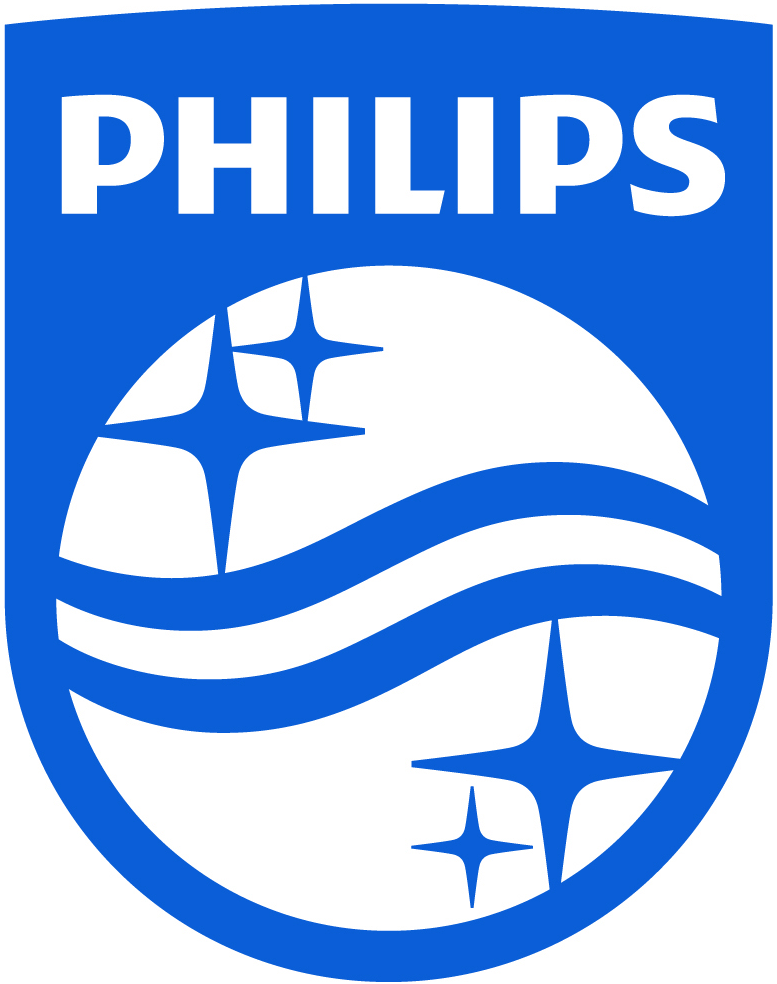
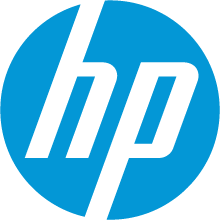
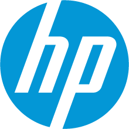
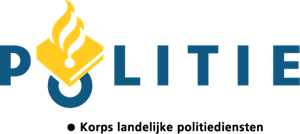
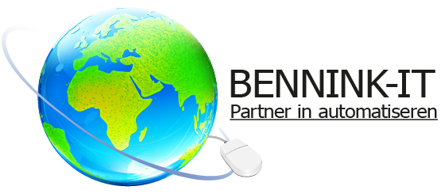

Gerrit Reinders
Gerrit ReindersSinds 1978 heb ik voor de onderstaande bedrijven gewerkt
-
Randstad Uitzendbureau
-
Philips
-
Digital
 - Compaq -
Hewlett Packard
- Compaq -
Hewlett PackardNa de overname werd het Philips deel grotendeels weg gereorganiseerd. Ik ben via Digital bij de NAM(Nederlandse Aardolie Maatschappij) in Assen gaan werken. Eerst de service voor de kantoren in Assen en Schoonebeek en later voor de boorlocaties. Vanuit Assen leverde ik service aan alle boorinstallaties in heel Nederland en op de noordzee. Op deze mobiele installaties werd in de bodem naar aardgas gezocht. Voor deze locaties verzorgde ik de computerapparatuur en de verbindigen met de kantoren van de NAM. Vanaf de Noordzee ging dit eerste via straalzenders en later via satelliet. Ik heb bij de NAM veel geleerd m.b.t. veiligheid. In Den Helder kreeg ik de volgende trainingen:
- Basiscursus veiligheid (petro)chemie
- Basic offshore safety & emergency response training
- HUET, Helicopter survival training
-
Korps Landelijke Politie Diensten
Door de afdeling CDI(Concerndienst Informatievoorziening) van het KLPD ben ik gevraagd om voor de Nationale Recherche het Microsoft NT 4 en Windows 2000 domain te beheren en voorbereidingen te treffen om deze omgevingen uit te faseren. In 2008 werden de werkzaamheden overgedragen aan vtsPN. Als senior systeembeheerder binnen het SBT(Speciaal Beheer Team) kreeg ik als taak Windows netwerken op te zetten en te beheren ten behoeve van een inlichtingen dienst van het KLPD. Deze netwerken moesten voldoen aan de hoogste beveiligingscriteria van de AIVD. Ik heb netwerken gedocumenteerd om overdracht mogelijk te maken.
-
Bennink IT
Een ICT-bedrijf in opbouw en was hier bezig met PR werkzaamheden, ik beheerde virtuele Microsoft omgevingen en richtte hierop systeemsoftware en applicaties in die bestemt waren voor de klanten. Daarnaast leverde ik support aan klanten met een Microsoft Office 365 abonnement.
Van 1978 tot 1980 heb ik als Uitzendkracht bij de volgende bedrijven gewerkt:
Texas Instruments, Almelo.
Het repareren van calculators(TI58 en TI59) op de afdeling klantenservice.
Ultra Centrifuge Nederland, Almelo
Technicus op het laboratorium. Ik ben in de korte periode bezig geweest met de aansturing van de motoren die gebruikt werden voor de centrifuges.
Philips I & E, Almelo.
Hier was ik programmeur testprogramma’s. Philips had hier een fabricage printplaten, deze printplaten werden getest op een ICCT(InCircuit Component Tester). Hiervoor moesten programma's gemaakt worden om de componeten op de printplaat te kunnen testen.
Omdat het in Nederland economisch niet zo goed ging vond ik het tijd worden voor een vaste baan. Ik ben 17 oktober 1980 bij Philips in vaste dienst getreden. Eerst nog enige tijd in de printfabriek en later op de afdeling Wetenschappelijke Apparaten. Hier kwam ik in aanraking met de rontgen techniek, we maakten hier rontgen spectrometers. Deze apparaten konden door de breking van een rontgenstraal weergeven welke samenstelling materialen hadden. Na 8 jaar vond ik tijd worden voor verandering, ik kreeg de kans om bij Philips(PTDSN) in Apeldoorn te gaan werken. Hier kwam ik in aanraking met de ICT wereld. In korte tijd veel geleerd en heb ondersteuning geleverd aan verschillende afdelingen die zich bezig hielden met de service van producten over de hele wereld. In 1992 heeft Philips de gehele computerdivise verkocht aan Digital.